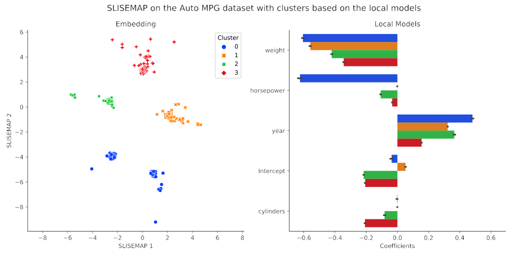

SLISEMAP: Combine supervised dimensionality reduction with local explanations#
SLISEMAP is a supervised dimensionality reduction method, that takes data, in the form of vectors, and predictions from a black box regression or classification model as input. SLISEMAP then simultaneously finds local explanations for all data items and builds a (typically) two-dimensional global visualisation of the black box model such that data items with similar local explanations are projected nearby. The explanations consists of white box models that locally approximate the black box model.
SLISEMAP is implemented in Python using PyTorch for efficient optimisation, and optional GPU-acceleration. For more information see the full paper, the demo paper, the demonstration video (slides), the examples directory, or the documentation.
Citation#
Björklund, A., Mäkelä, J. & Puolamäki, K. (2022).
SLISEMAP: Supervised dimensionality reduction through local explanations.
arXiv:2201.04455 [cs], https://arxiv.org/abs/2201.04455.
Installation#
To install the package just run:
pip install slisemap
Or install the latest version directly from GitHub:
pip install git+https://github.com/edahelsinki/slisemap
PyTorch#
Since SLISEMAP utilises PyTorch for efficient calculations, you might want to install a version that is optimised for your hardware. See https://pytorch.org/get-started/locally for details.
Example#
import numpy as np
from slisemap import Slisemap
X = np.array(...)
y = np.array(...)
sm = Slisemap(X, y, radius=3.5, lasso=0.001)
sm.optimise()
sm.plot(clusters=4, bars=5)

See the examples directory for more detailed examples, and the documentation for more detailed instructions.